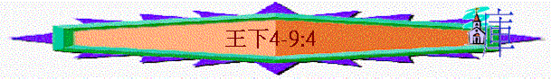

|
屬神國度的衰落 |
|||
|
二王—行神的旨意得堅固
|
二國—不專心順服終分裂
|
二先知—神能力彰顯仍剛硬
|
二結局—繼續行惡至終亡國
|
|
王上1-10 |
王上11-16 |
王上17-王下9:4 |
王下9:5-25:30 |
三.二先知----神能力彰顯仍剛硬(王上17-王下9:4)
1.以利沙先知(王下2:28-9:4)
A.他的能力
a.治好的能力
b.咒詛的能力
c.得勝的能力
d.供應的能力
(1)寡婦的哀求
「有一個先知門徒的妻哀求以利沙說：「你僕人我丈夫死了，他敬畏耶和華是你所知道的。現在有債主來，要取我兩個兒子作奴僕。」」王下4:1
(2)神人的幫助
「以利沙問他說：「我可以為你做什麼呢？你告訴我，你家裡有什麼？」他說：「婢女家中除了一瓶油之外，沒有什麼。」以利沙說：「你去，向你眾鄰舍借空器皿，不要少借；回到家裡，關上門，你和你兒子在裡面將油倒在所有的器皿裡，倒滿了的放在一邊。」於是，婦人離開以利沙去了，關上門，自己和兒子在裡面；兒子把器皿拿來，他就倒油。器皿都滿了，他對兒子說：「再給我拿器皿來。」兒子說：「再沒有器皿了。」油就止住了。婦人去告訴神人，神人說：「你去賣油還債，所剩的你和你兒子可以靠著度日。」」王下4:2-7
∼以利沙行了一件大能的神蹟，就是將一瓶油倒滿了很多器皿，令婦人可以賣油還債。這神蹟和以利亞使撒勒法的寡婦之罈的麵不減少，瓶的油不短有相似的地方，足証明以利沙也有以利亞的能力，他也是神人
e.生命的能力
(1)使人得兒子
(A)婦人的接待----顯出他是聖潔的神人
「一日，以利沙走到書念，在那裡有一個大戶的婦人強留他吃飯。此後，以利沙每從那裡經過就進去吃飯。婦人對丈夫說：「我看出那常從我們這裡經過的是聖潔的神人。我們可以為他在牆上蓋一間小樓，在其中安放床榻、桌子、椅子、燈臺，他來到我們這裡，就可以住在其間。」」4:8-10
∼婦人應不知以利沙是誰，但在接待過程中，看到神人的生命及言行，就知他是聖潔的神人
(B)神人的預言----顯出他所說的會應驗
「以利沙對僕人說：「究竟當為他做什麼呢？」基哈西說：「他沒有兒子，他夫也老了。」以利沙說：「再叫他來。」於是叫了他來，他就站在門口。以利沙說：「明年到這時候，你必抱一個兒子。」他說：「神人，我主啊，不要那樣欺哄婢女。」婦人果然懷孕，到了那時候，生了一個兒子，正如以利沙所說的。」4:14-17
(2)使人得復活----顯出他祈禱的能力
(A)兒子死了
「孩子漸漸長大，一日到他父親和收割的人那裡，他對父親說：「我的頭啊，我的頭啊！」他父親對僕人說：「把他抱到他母親那裡。」僕人抱去，交給他母親；孩子坐在母親的膝上，到晌午就死了。」4:18-20
(B)神人祈求
「他就關上門，只有自己和孩子在裡面，他便祈禱耶和華，上床伏在孩子身上，口對口，眼對眼，手對手；既伏在孩子身上，孩子的身體就漸漸溫和了。然後他下來，在屋裡來往走了一趟，又上去伏在孩子身上，孩子打了七個噴嚏，就睜開眼睛了。」4:33-35
∼以利亞也曾使寡婦的兒子從死裡復活，他要三次伏在孩子身上，求告神，今次以利沙也使婦人的兒子得復活，而且他只是伏在孩子身上二次，也顯出感動以利亞的靈也加倍感動以利沙
f.解毒的能力
「倒出來給眾人吃，吃的時候，都喊叫說：「神人哪，鍋中有致死的毒物！」所以眾人不能吃了。以利沙說：「拿點麵來」，就把麵撒在鍋中，說：「倒出來，給眾人吃吧！」鍋中就沒有毒了。」4:40-41
g.豐足的能力----顯出神的話會應驗
「有一個人從巴力沙利沙來，帶著初熟大麥做的餅二十個，並新穗子，裝在口袋裡送給神人。神人說：「把這些給眾人吃。」僕人說：「這一點豈可擺給一百人吃呢？」以利沙說：「你只管給眾人吃吧！因為耶和華如此說，眾人必吃了，還剩下。」僕人就擺在眾人面前，他們吃了，果然還剩下，正如耶和華所說的。」4:42-44
∼巴力沙利沙可能在以法蓮山地(撒上9:4)，新穗子是用火烘過的新麥穗
∼以利沙能使二十個餅及新穗子分給一百人吃，並還有餘，他能力的源頭是因為「耶和華如此說」
∼而以利沙開始行的神蹟是以利亞沒有行過的
h.潔淨的能力
(1)元帥的頑疾
「亞蘭王的元帥乃縵在他主人面前為尊為大，因耶和華曾藉他使亞蘭人得勝；他又是大能的勇士，只是長了大痲瘋。」5:1
∼舊約的大痲瘋可指皮膚病症，亞蘭王元帥乃縵得了皮膚病，他是大能的勇士，神也藉他使亞蘭人得勝
(2)別人的信心
(A)使女的信心
「先前亞蘭人成群地出去，從以色列國擄了一個小女子，這女子就服事乃縵的妻。他對主母說：「巴不得我主人去見撒瑪利亞的先知，必能治好他的大痲瘋。」」5:2-3
(B)僕人的信心
「他的僕人進前來，對他說：「我父啊，先知若吩咐你做一件大事，你豈不做嗎？何況說你去沐浴而得潔淨呢？」」5:13
∼亞罷拿是穿過大馬色的河，法珥法可能是亞罷拿南部的支流
(C)元帥的信心
(a)有行為的信心
「於是乃縵下去，照著神人的話，在約旦河�堥N浴七回；他的肉復原，好像小孩子的肉，他就潔淨了。」5:14
「用以在那長大痲瘋求潔淨的人身上灑七次，就定他為潔淨，又把活鳥放在田野裡。」利14:7
∼乃縵最終用行動表明他信先知的話，在約但河沐浴七回，也像利未記潔淨的條例，用活水灑在人身上七次
(b)有悔改的信心
「乃縵帶著一切跟隨他的人，回到神人那裡，站在他面前，說：「如今我知道，除了以色列之外，普天下沒有神。現在求你收點僕人的禮物。」」5:15
「惟有一件事，願耶和華饒恕你僕人：我主人進臨門廟叩拜的時候，我用手攙他在臨門廟，我也屈身。我在臨門廟屈身的這事，願耶和華饒恕我。」以利沙對他說：「你可以平平安安的回去！」乃縵就離開他去了；走了不遠，神人以利沙的僕人基哈西心裡說：「我主人不願從這亞蘭人乃縵手裡受他帶來的禮物，我指著永生的耶和華起誓，我必跑去追上他，向他要些。」」5:18-19
「那日，耶路撒冷必有大大的悲哀，如米吉多平原之哈達臨門的悲哀。」亞12:11
∼臨門即大馬色的神哈達之名；它是暴風之神
∼連僕人、使女、外邦人對神及先知有信心，但神的選民又如何？
(3)選民的軟弱
(A)王的無知
「以色列王看了信就撕裂衣服，說：「我豈是神，能使人死使人活呢？這人竟打發人來，叫我治好他的大痲瘋。你們看一看，這人何以尋隙攻擊我呢？」神人以利沙聽見以色列王撕裂衣服，就打發人去見王，說：「你為什麼撕了衣服呢？可使那人到我這裡來，他就知道以色列中有先知了。」」5:7-8
∼王竟然如此無知，不知道以以色列有先知，能治好乃縵的病
(B)人的不信
「先知以利沙的時候，以色列中有許多長大痲瘋的，但內中除了敍利亞國的乃縵，沒有一個得潔淨的。」」路4:27
∼耶穌說在先知以利沙的時代，以色列中有許多長大痲瘋病的人，但除了乃縵，沒有一個得潔淨。為何他們不得潔淨，明顯是因為他們雖知以色列地有先知，但他們沒有信心尋求，但乃縵是外邦人，卻有比選民更大的信心
(C)門徒的貪念
「神人以利沙的僕人基哈西心裡說：「我主人不願從這亞蘭人乃縵手裡受他帶來的禮物，我指著永生的耶和華起誓，我必跑去追上他，向他要些。」於是基哈西追趕乃縵。乃縵看見有人追趕，就急忙下車迎著他，說：「都平安嗎？」說：「都平安。我主人打發我來說：『剛才有兩個少年人，是先知門徒，從以法蓮山地來見我，請你賜他們一他連得銀子，兩套衣裳。』」乃縵說：「請受二他連得」；再三的請受，便將二他連得銀子裝在兩個口袋裡，又將兩套衣裳交給兩個僕人；他們就在基哈西前頭抬著走。」5:20-23
「基哈西進去，站在他主人面前。以利沙問他說：「基哈西你從那裡來？」回答說：「僕人沒有往那裡去。」以利沙對他說：「那人下車轉回迎你的時候，我的心豈沒有去呢？這豈是受銀子、衣裳、買橄欖園、葡萄園、牛羊、僕婢的時候呢？因此，乃縵的大痲瘋必沾染你和你的後裔，直到永遠。」基哈西從以利沙面前退出去，就長了大痲瘋，像雪那樣白。」5:25-27
∼基哈西因為貪心，產生濫用神的名、說謊、隱暪的罪來，至終他得了報應，患了乃縵的大痲瘋病來
i.尋回的能力
「有一人砍樹的時候，斧頭掉在水裡，他就呼叫說：「哀哉！我主啊，這斧子是借的。」神人問說：「掉在那裡了？」他將那地方指給以利沙看。以利沙砍了一根木頭，拋在水裡，斧頭就漂上來了。以利沙說：「拿起來吧！」那人就伸手拿起來了。」6:5-7
j.保護的能力
(1)預知的提防
「亞蘭王與以色列人爭戰，和他的臣僕商議說：「我要在某處某處安營。」神人打發人去見以色列王，說：「你要謹慎，不要從某處經過，因為亞蘭人從那裡下來了。」以色列王差人去窺探神人所告訴所警戒他去的地方，就防備未受其害，不止一兩次。」6:8-10
(2)天軍的保護
「有一個臣僕說：「我主，我王！無人幫助他，只有以色列中的先知以利沙，將王在臥房所說的話告訴以色列王了。」王說：「你們去探他在那裡，我好打發人去捉拿他。」有人告訴王說：「他在多坍。」」6:12-13
「神人的僕人清早起來出去，看見車馬軍兵圍困了城。僕人對神人說：「哀哉！我主啊，我們怎樣行才好呢？」神人說：「不要懼怕！與我們同在的比與他們同在的更多。」以利沙禱告說：「耶和華啊，求你開這少年人的眼目，使他能看見。」耶和華開他的眼目，他就看見滿山有火車火馬圍繞以利沙。」6:15-17
(3)敵人的敗回
「敵人下到以利沙那裡，以利沙禱告耶和華說：「求你使這些人的眼目昏迷。」耶和華就照以利沙的話，使他們的眼目昏迷。以利沙對他們說：「這不是那道，也不是那城；你們跟我去，我必領你們到所尋找的人那裡。」於是領他們到了撒瑪利亞。」6:18-19
「王就為他們預備了許多食物；他們吃喝完了，打發他們回到他們主人那裡。從此，亞蘭軍不再犯以色列境了。」6:23
∼亞蘭「軍」的「軍」字原文作群，可能指從事邊境侵略的亞蘭部隊不再犯以色列境，但亞蘭全軍則在下文中圍困撒瑪利亞
k.預言的能力
(1)城的危圍
(A)敵人圍困
「此後，亞蘭王便哈達聚集他的全軍，上來圍困撒瑪利亞。」6:24
(B)城中飢荒
「於是撒瑪利亞被圍困，有饑荒，甚至一個驢頭值銀八十舍客勒，二升鴿子糞值銀五舍客勒。」6:25
「王問婦人說：「你有什麼苦處？」他回答說：「這婦人對我說：『將你的兒子取來，我們今日可以吃，明日可以吃我的兒子。』我們就煮了我的兒子吃了。次日我對他說：『要將你的兒子取來，我們可以吃。』他卻將他的兒子藏起來了。」」6:28-29
∼八十舍客勒約一公斤，二升原文四分一升，即半公斤
∼驢頭是不會有人吃的食物，也因沒食物而提升至八十舍客勒價錢，鴿子糞可能是一種粗小穀類或野生的角豆或豆莢
(2)人的軟弱
(A)遷怒神僕
「王說：「我今日若容沙法的兒子以利沙的頭仍在他項上，願神重重的降罰與我！」」6:31
(B)不仰望神
「正說話的時候，使者來到，王也到了，說：「這災禍是從耶和華那�堥茠滿A我何必再仰望耶和華呢？」」6:33
(C)不信主言
「有一個攙扶王的軍長對神人說：「即便耶和華使天開了窗戶，也不能有這事。」以利沙說：「你必親眼看見，卻不得吃。」」7:2
(3)神的幫助
(A)預告
「以利沙說：「你們要聽耶和華的話，耶和華如此說：明日約到這時候，在撒瑪利亞城門口，一細亞細麵要賣銀一舍客勒，二細亞大麥也要賣銀一舍客勒。」」7:1
∼神預告食物的價錢會降低，因他們將有足夠的食物
(B)成就
「黃昏的時候，他們起來往亞蘭人的營盤去；到了營邊，不見一人在那裡。因為主使亞蘭人的軍隊聽見車馬的聲音，是大軍的聲音；他們就彼此說：「這必是以色列王賄買赫人的諸王和埃及人的諸王來攻擊我們。」所以，在黃昏的時候他們起來逃跑，撇下帳棚、馬、驢，營盤照舊，只顧逃命。」7:5-7
(C)應驗
「眾人就出去，擄掠亞蘭人的營盤。於是一細亞細麵賣銀一舍客勒，二細亞大麥也賣銀一舍客勒，正如耶和華所說的。」7:16
(4)人的惡果
「王派攙扶他的那軍長在城門口彈壓，眾人在那裡將他踐踏，他就死了，正如神人在王下來見他的時候所說的。」7:17
「那軍長對神人說：「即便耶和華使天開了窗戶，也不能有這事。」神人說：「你必親眼看見，卻不得吃。」這話果然應驗在他身上；因為眾人在城門口將他踐踏，他就死了。」7:19-20
l.預知的能力
(1)預告必有飢荒
「以利沙曾對所救活之子的那婦人說：「你和你的全家要起身往你可住的地方去住，因為耶和華命饑荒降在這地七年。」婦人就起身，照神人的話帶著全家往非利士地去，住了七年。」8:1-2
(2)哀求得回其業
「那時王正與神人的僕人基哈西說：「請你將以利沙所行的一切大事告訴我。」基哈西告訴王以利沙如何使死人復活，恰巧以利沙所救活、他兒子的那婦人為自己的房屋田地來哀告王。基哈西說：「我主我王，這就是那婦人，這是他的兒子，就是以利沙所救活的。」」8:4-5
∼之前講述基哈西患了大痲，為何今次他可在神面前將以利沙的事告知王？可能此段歷史是在基哈亞患大痲病前發生加插的，目的是顯明以利沙有預知的能力
(3)至終得回田地
「王問那婦人，他就把那事告訴王。於是王為他派一個太監，說：「凡屬這婦人的都還給他，自從他離開本地直到今日，他田地的出產也都還給他。」」8:6
B.他在君王中的工作
a.預告亞蘭王的王位逆轉
(1)亞蘭王的疾病
「以利沙來到大馬色，亞蘭王便哈達正患病。有人告訴王說：「神人來到這裡了。」王就吩咐哈薛說：「你帶著禮物去見神人，託他求問耶和華，我這病能好不能好？」」8:7-8
∼便哈達是亞蘭王的另一個稱呼
(2)以利沙的預言
「以利沙對哈薛說：「你回去告訴他說，這病必能好；但耶和華指示我，他必要死。」神人定睛看著哈薛，甚至他慚愧。神人就哭了；哈薛說：「我主為什麼哭？」回答說：「因為我知道你必苦害以色列人，用火焚燒他們的保障，用刀殺死他們的壯丁，摔死他們的嬰孩，剖開他們的孕婦。」哈薛說：「你僕人算什麼，不過是一條狗，焉能行這大事呢？」以利沙回答說：「耶和華指示我，你必作亞蘭王。」」8:10-13
∼神人預知哈薛必會作亞蘭王，但他卻會苦害以色列人，所以先知因此而哭了
(3)預言真的應驗
「次日，哈薛拿被窩浸在水中，蒙住王的臉，王就死了。於是哈薛篡了他的位。」8:15
b.膏立耶戶作以色列王
(1)南國約蘭王的惡行
(A)他的惡行----行以色列諸王所行的
「以色列王亞哈的兒子約蘭第五年，猶大王約沙法還在位的時候，約沙法的兒子約蘭登基作了猶大王。約蘭登基的時候年三十二歲，在耶路撒冷作王八年。他行以色列諸王所行的，與亞哈家一樣；因為他娶了亞哈的女兒為妻，行耶和華眼中看為惡的事。耶和華卻因他僕人大衛的緣故，仍不肯滅絕猶大，照他所應許大衛的話，永遠賜燈光與他的子孫。」8:16-19
∼約沙法的兒子約蘭因娶了亞哈的女兒為妻，所以行亞哈家的罪惡
(B)以東背叛
「約蘭年間，以東人背叛猶大，脫離他的權下，自己立王。約蘭率領所有的戰車往撒益去，夜間起來，攻打圍困他的以東人和車兵長；猶大兵就逃跑，各回各家去了。這樣，以東人背叛猶大，脫離他的權下，直到今日。那時立拿人也背叛了。」8:20-22
(2)南國亞哈謝王的惡行
(A)他的惡行----效法亞哈家的惡事
「以色列王亞哈的兒子約蘭十二年，猶大王約蘭的兒子亞哈謝登基。」8:25
「亞哈謝效法亞哈家行耶和華眼中看為惡的事，與亞哈家一樣，因為他是亞哈家的女婿。」8:27
(B)他的同盟----北國約蘭王
「他與亞哈的兒子約蘭同往基列的拉末去，與亞蘭王哈薛爭戰。亞蘭人打傷了約蘭，約蘭王回到耶斯列，醫治在拉末與亞蘭王哈薛打仗的時候所受的傷。猶大王約蘭的兒子亞哈謝因為亞哈的兒子約蘭病了，就下到耶斯列看望他。」8:28-29
(3)以利沙膏立耶戶作王(作北國的王)
「先知以利沙叫了一個先知門徒來，吩咐他說：「你束上腰，手拿這瓶膏油往基列的拉末去。到了那裡，要尋找寧示的孫子、約沙法的兒子耶戶，使他從同僚中起來，帶他進嚴密的屋子，將瓶裡的膏油倒在他頭上，說：『耶和華如此說：我膏你作以色列王。』說完了，就開門逃跑，不要遲延。」於是那少年先知往基列的拉末去了。」9:1-4